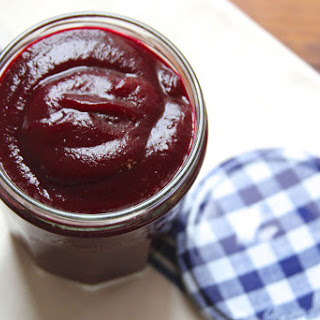

Back
Beet Ketchup
Makes 3 cups of ketchup. Will keep in fridge for 3 weeks.
Ingredients
- 1 lb. cooked red beets, diced (canned would probably work)
- 1 cup apple cider vinegar
- 1⁄2 cup brown sugar
- 1⁄4 cup diced onion (can leave out if you don't want to risk)
- 1⁄2 tsp. salt
- 1⁄4 tsp. ground coriander
- 1⁄4 tsp. ground cloves
- Freshly ground black pepper, to taste

Instructions
- Combine the chopped beets, vinegar, brown sugar, and onion in a 6-qt. saucepan and stir to combine. Place over high heat and bring to a boil. Reduce the heat to medium-high and cook for 25 minutes, until beets are tender.
- Remove saucepan from heat and purée (in blender) with remaining ingredients. Taste and adjust seasoning, if necessary.
Source